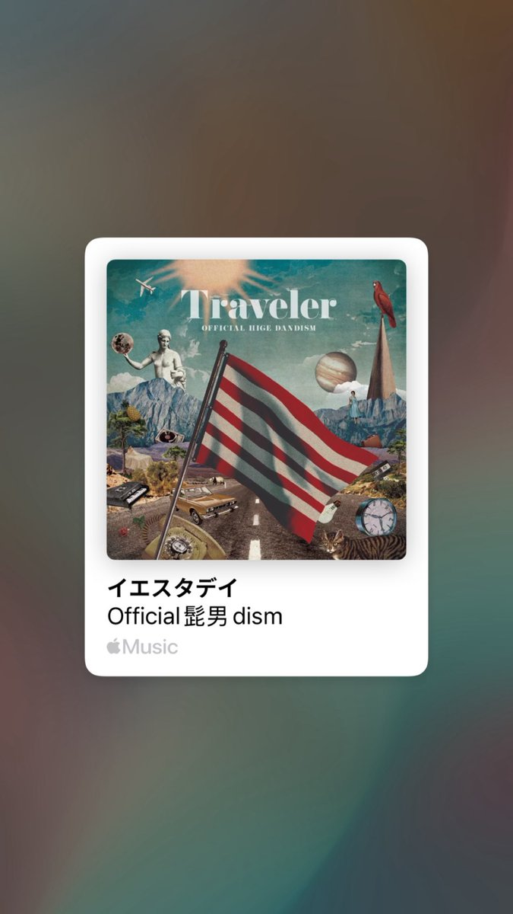

番茄🍅
@bcfqdtfqz
@MizutaniSubaru_ 巨人算吗…？一天晚上刷墙内视频说巨人夹带私货，抱着好奇心熬夜了一周看完一到三季，最终季应该看了前两三集，因为给我看的有点哭了……？

水谷昴
@MizutaniSubaru_
推油🚪的二刺猿入坑作是哪一部呢🧐
我的话是2022年引进中国，被朋友拖去看的《你好世界》，从此一发不可收拾.......现在当时的两个朋友都已经变成了鲜葱😡😡
以及我的jpop入坑曲就是胡子男为这部作品创作的主题曲
イエスタデイ https://t.co/iEchRS0EPm